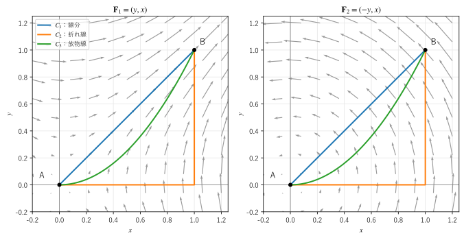

第 11 章 線積分と保存場
曲線に沿って場を積分するのが線積分である。この章では、スカラー場の線積分（曲線に沿った量の合計）と、ベクトル場の線積分（力がする仕事や流れの循環）を説明する。さらに、線積分の値が経路によらない場（保存場）と、その場を表すポテンシャルを扱う。
スカラー場の線積分
定義
針金の線密度 \(\mu\) が場所によって違うとき、針金全体の質量を求めるには、針金を短く分けて「線密度 × 長さ」を足し合わせればよい。これを極限にしたものが、スカラー場の線積分である。
曲線 \(C\) を \(\bm{r}(t)\)（\(a \le t \le b\)）とパラメーター表示する。パラメーターが \(dt\) だけ変わると、点は曲線に沿って \(ds = |\bm{r}'(t)| \, dt\) だけ進む（第 3 章の弧長）。したがって、スカラー場 \(f\) の線積分は次のように計算できる。
\(f = 1\) なら、線積分は曲線の長さである。
この値は、曲線のパラメーター表示の選び方にも、曲線をたどる向きにもよらない。\(ds\) は長さなので、常に正だからである。
例：らせん状の針金の質量
らせん \(\bm{r}(t) = (\cos t, \sin t, t)\)（\(0 \le t \le 2\pi\)）の形をした針金があり、線密度が高さに比例して \(\mu = z\) であるとする。\(\bm{r}'(t) = (-\sin t, \cos t, 1)\) なので \(|\bm{r}'(t)| = \sqrt{2}\) であり、質量は
となる。
ベクトル場の線積分
仕事
一定の力 \(\bm{F}\) を受けながら物体が変位 \(\Delta\bm{r}\) だけ動くと、力がする仕事は \(\bm{F} \cdot \Delta\bm{r}\) である（第 2 章）。力が場所によって変わる場合や、物体が曲線に沿って動く場合は、経路を短く分けて仕事を足し合わせる。これを極限にしたものが、ベクトル場の線積分である。
成分で書くと \(d\bm{r} = (dx, dy, dz)\) なので、次の形でも書かれる。
単位接線ベクトル \(\bm{T}\) を使うと \(d\bm{r} = \bm{T} \, ds\) なので、\(\int_C \bm{F} \cdot d\bm{r} = \int_C (\bm{F} \cdot \bm{T}) \, ds\) である。つまり、ベクトル場の線積分は、場の接線方向の成分 \(\bm{F} \cdot \bm{T}\) をスカラー場として線積分したものである。曲線に垂直な成分は寄与しない。
向きによる符号の変化
ベクトル場の線積分は、曲線をたどる向きを逆にすると符号が変わる。逆向きでは \(\bm{T}\) が \(-\bm{T}\) になるからである。曲線 \(C\) を逆向きにたどる曲線を \(-C\) と書くと
が成り立つ。スカラー場の線積分と違い、ベクトル場の線積分では曲線の向きを指定しなければならない。一方、同じ向きにたどるなら、パラメーター表示の選び方にはよらない。
循環
始点と終点が一致する曲線を閉曲線という。閉曲線に沿ったベクトル場の線積分を循環といい、\(\oint_C\) と書く。
流れの速度場 \(\bm{v}\) の循環は、流れが閉曲線に沿ってどれだけ回っているかを表す。第 7 章の回転（の成分）は、微小な長方形を一周する循環を面積で割ったものであった。平面の閉曲線は、特に断らない限り反時計回りを正の向きとする。
経路による違い
線積分の値は、一般には始点と終点だけでなく、途中の経路によって変わる。図 16 の 2 つのベクトル場
を、原点 A から点 B \((1, 1)\) までの 3 つの経路に沿って線積分してみる。
\(C_1\)：線分 \(\bm{r}(t) = (t, t)\)（\(0 \le t \le 1\)）
\(C_2\)：\((1, 0)\) を経由する折れ線
\(C_3\)：放物線 \(\bm{r}(t) = (t, t^2)\)（\(0 \le t \le 1\)）


図 16 2 つのベクトル場と、A から B への 3 つの経路
たとえば \(C_3\) では \(\bm{r}'(t) = (1, 2t)\) なので、次のようになる。
すべての経路の結果を表 15 に示す。
経路 |
\(\bm{F}_1 = (y, x)\) |
\(\bm{F}_2 = (-y, x)\) |
|---|---|---|
\(C_1\)（線分） |
1 |
0 |
\(C_2\)（折れ線） |
1 |
1 |
\(C_3\)（放物線） |
1 |
1/3 |
\(\bm{F}_1\) ではどの経路でも 1 になるが、\(\bm{F}_2\) では経路によって値が違う。\(\bm{F}_2\) は原点のまわりを回る場なので、経路が原点からどう離れていくかで、場に沿って進む量が変わるのである。次のサンプルは、これらの線積分を SciPy で数値計算する。
32def line_integral(field: Field, path: Path, t0: float, t1: float) -> float:
33 """∫_C F·dr = ∫_{t0}^{t1} F(r(t))·r'(t) dt を数値計算する."""
34 r, dr = path
35 value, _ = integrate.quad(lambda t: float(field(r(t)) @ dr(t)), t0, t1)
36 # 丸め誤差で -0.000000 と表示されないように、ごく小さい値は 0 にする
37 return 0.0 if abs(value) < 1e-12 else float(value)
A = (0, 0) から B = (1, 1) までの線積分
C1（線分） F1: 1.000000 F2: 0.000000
C2（折れ線） F1: 1.000000 F2: 1.000000
C3（放物線） F1: 1.000000 F2: 0.333333
単位円を反時計回りに 1 周する循環
F1: 0.000000 F2: 6.283185 (2 pi = 6.283185)
単位円を反時計回りに 1 周する循環は、\(\bm{F}_1\) では 0、\(\bm{F}_2\) では \(2\pi\) になる。2 つの経路の線積分が違うことと、閉曲線の循環が 0 でないことは同じことを表している。経路 \(C\) と \(C'\) が同じ始点と終点を持つなら、\(C\) をたどってから \(C'\) を逆にたどると閉曲線になり、その循環は 2 つの線積分の差に等しいからである。
サンプルの全体：ch11_two_paths.py
保存場とポテンシャル
勾配の線積分
\(\bm{F}_1 = (y, x)\) は、スカラー場 \(\phi = xy\) の勾配 \(\nabla \phi = (y, x)\) である。勾配の線積分は、次の式で計算できる。
A と B は曲線 \(C\) の始点と終点である。これは、連鎖律（第 4 章）から
となるので、両辺を \(t\) について \(a\) から \(b\) まで積分すると、右辺は線積分 \(\int_C \nabla \phi \cdot d\bm{r}\)、左辺は \(\phi(\bm{r}(b)) - \phi(\bm{r}(a))\) になることから分かる。式 (13) は 1 変数の微分積分学の基本定理 \(\int_a^b f'(x) \, dx = f(b) - f(a)\) を曲線に拡張したもので、勾配定理（線積分の基本定理）と呼ばれる。右辺は始点と終点だけで決まるので、勾配の線積分は経路によらない。\(\bm{F}_1\) の線積分がどの経路でも \(\phi(1, 1) - \phi(0, 0) = 1\) になったのはこのためである。
保存場の定義
ある領域で、任意の 2 点を結ぶ線積分が経路によらないベクトル場を保存場という。このとき、次の 3 つは同値である。
\(\bm{F}\) の線積分が経路によらない。
領域内の任意の閉曲線で \(\oint_C \bm{F} \cdot d\bm{r} = 0\) である。
\(\bm{F} = \nabla \phi\) となるスカラー場 \(\phi\) が存在する。
\(\phi\) を \(\bm{F}\) のポテンシャル（スカラーポテンシャル）という。3 から 1 は勾配定理そのものであり、1 と 2 が同値であることは前の節で説明した。1 から 3 は、基準点 \(\bm{r}_0\) を決めて
と定義すればよい。線積分が経路によらないので、\(\phi\) は終点 \(\bm{r}\) だけで決まる。終点を \(x\) 方向に少し動かして差を取ると \(\partial \phi / \partial x = F_x\) となり、他の成分も同様なので \(\nabla \phi = \bm{F}\) が成り立つ。ポテンシャルには定数を加える自由がある。
物理での符号の慣習
物理では、保存力 \(\bm{F}\) に対して \(\bm{F} = -\nabla U\) となる \(U\) を位置エネルギー（ポテンシャルエネルギー）と呼ぶ。負号が付くのは、力が位置エネルギーの低い方へ向かうように定義するためである。このとき、A から B まで動く間に力がする仕事は
で、位置エネルギーの減少量に等しい。電場でも同様に \(\bm{E} = -\nabla V\)（\(V\) は電位）と書く。本書では、数学的な議論では \(\bm{F} = \nabla \phi\)、物理の議論では \(\bm{F} = -\nabla U\) を使う。ポテンシャルという言葉が出てきたら、どちらの符号の約束かを確かめるとよい。
例：重力の仕事
地表付近の重力 \(\bm{F} = (0, 0, -mg)\) は、\(U = mgz\) とすると \(\bm{F} = -\nabla U\) を満たす保存場である。物体がらせん \(\bm{r}(t) = (\cos t, \sin t, t)\) に沿って \(t = 2\pi\) から \(t = 0\) まで下る間に重力がする仕事と、同じ 2 点をまっすぐ結ぶ経路で下る間の仕事を比べる。
32def gravity_work_helix(m: float, g: float) -> float:
33 """重力 F = (0, 0, -mg) が、らせんを t = 2π から t = 0 まで下る物体にする仕事."""
34 force = np.array([0.0, 0.0, -m * g])
35 # t を 2π から 0 へ逆向きにたどるので、積分の上端と下端を入れ替える
36 value, _ = integrate.quad(lambda t: float(force @ helix_velocity(t)), 2.0 * math.pi, 0.0)
37 return float(value)
針金の質量: 27.915457 (厳密な値 2*sqrt(2)*pi^2 = 27.915457)
重力の仕事（らせんに沿って下る）: 61.575216 J
重力の仕事（まっすぐ下る） : 61.575216 J
位置エネルギーの減少 m g h : 61.575216 J
サンプルでは \(m = 1 \, \mathrm{kg}\)、\(g = 9.8 \, \mathrm{m/s^2}\) とした。どちらの経路でも、仕事は位置エネルギーの減少 \(mgh = mg \cdot 2\pi\) に等しい。1 行目は、前の節で求めた針金の質量の数値計算である。
サンプルの全体：ch11_helix.py
例：摩擦力
床の上で物体を引きずるときの動摩擦力は、大きさが一定（\(\mu_k N\)、\(\mu_k\) は動摩擦係数、\(N\) は垂直抗力）で、向きが常に運動の向きと逆である。したがって、摩擦力がする仕事は \(-\mu_k N \times \text{（経路の長さ）}\) となり、遠回りするほど大きな負の仕事をする。摩擦力は経路によって仕事が変わる力の代表例であり、位置エネルギーで表すことはできない。そもそも摩擦力は位置だけでなく運動の向きで決まるので、位置の関数としてのベクトル場ではない。
ポテンシャルの求め方
保存場であるための必要条件
\(\bm{F} = \nabla \phi\) なら、第 8 章の公式 \(\nabla \times (\nabla \phi) = \bm{0}\) から
が成り立つ。つまり、渦なしの場であることは、保存場であるための必要条件である。\(\bm{F}_2 = (-y, x)\) は第 7 章の角速度 \(\omega = 1\) の剛体回転と同じ場であり、\(\nabla \times \bm{F}_2 = (0, 0, 2) \ne \bm{0}\) なので、保存場ではない。
逆に、\(\nabla \times \bm{F} = \bm{0}\) なら保存場かというと、領域の形によっては成り立たない。領域が単連結である場合、つまり、領域内の任意の閉曲線を、領域から出ることなく連続的に縮めて 1 点にできる場合には、\(\nabla \times \bm{F} = \bm{0}\) なら保存場である。このことは、第 15 章のストークスの定理を使って第 16 章で示す。空間全体や球の内部は単連結だが、穴の開いた平面や、\(z\) 軸を除いた空間は単連結ではない。単連結でない領域で、渦なしなのに保存場でない例（自由渦）は第 16 章で扱う。
成分を順に積分する
渦なしの場のポテンシャルは、成分を順に積分して求められる。例として、次の場のポテンシャルを求める。
回転を計算すると \(\bm{0}\) になるので、空間全体（単連結）で保存場である。
\(\partial \phi / \partial x = F_x\) を \(x\) で積分する。積分定数は \(y\) と \(z\) の関数 \(g(y, z)\) になる。
\[\phi = x^2 y + xz + g(y, z)\]\(\partial \phi / \partial y = x^2 + \partial g / \partial y\) が \(F_y = x^2 + 2yz\) に等しいので、\(\partial g / \partial y = 2yz\) である。\(y\) で積分して \(g = y^2 z + h(z)\) を得る。
\(\partial \phi / \partial z = x + y^2 + h'(z)\) が \(F_z = x + y^2 + 3z^2\) に等しいので、\(h'(z) = 3z^2\)、\(h = z^3 + \text{定数}\) である。
以上から \(\phi = x^2 y + xz + y^2 z + z^3 + \text{定数}\) を得る。手順 2 と 3 で、\(\partial g / \partial y\) が \(x\) を含まず、\(h'(z)\) が \(x, y\) を含まないことは、回転が \(\bm{0}\) であることから保証される。回転が \(\bm{0}\) でない場で同じことをすると、どこかの手順で矛盾が生じる。
次のサンプルは、同じ手順を SymPy で実行する。
11def report() -> None:
12 """回転が 0 であることを確かめ、成分を順に積分してポテンシャルを求める."""
13 fx, fy, fz = 2 * x * y + z, x**2 + 2 * y * z, x + y**2 + 3 * z**2
14 curl = (sp.diff(fz, y) - sp.diff(fy, z), sp.diff(fx, z) - sp.diff(fz, x), sp.diff(fy, x) - sp.diff(fx, y))
15 print("F =", (fx, fy, fz))
16 print("rot F =", curl)
17
18 # 手順 1：F_x を x で積分する。積分定数は y と z の関数 g(y, z) になる
19 phi = sp.integrate(fx, x)
20 print("手順 1: ∫F_x dx =", phi, "+ g(y, z)")
21 # 手順 2：∂φ/∂y = F_y から ∂g/∂y を求め、y で積分する
22 g_y = sp.simplify(fy - sp.diff(phi, y))
23 phi = phi + sp.integrate(g_y, y)
24 print("手順 2: ∂g/∂y =", g_y)
25 # 手順 3：∂φ/∂z = F_z から残りの z だけの関数を求める
26 h_z = sp.simplify(fz - sp.diff(phi, z))
27 phi = phi + sp.integrate(h_z, z)
28 print("手順 3: ∂h/∂z =", h_z)
29 print("ポテンシャル φ =", phi, "+ 定数")
30
31 grad = tuple(sp.simplify(sp.diff(phi, v)) for v in (x, y, z))
32 print("確認: ∇φ =", grad)
33 a, b = {x: 0, y: 0, z: 0}, {x: 1, y: 2, z: 3}
34 print("(0, 0, 0) から (1, 2, 3) までの線積分 = φ(1, 2, 3) - φ(0, 0, 0) =", phi.subs(b) - phi.subs(a))
F = (2*x*y + z, x**2 + 2*y*z, x + y**2 + 3*z**2)
rot F = (0, 0, 0)
手順 1: ∫F_x dx = x**2*y + x*z + g(y, z)
手順 2: ∂g/∂y = 2*y*z
手順 3: ∂h/∂z = 3*z**2
ポテンシャル φ = x**2*y + x*z + y**2*z + z**3 + 定数
確認: ∇φ = (2*x*y + z, x**2 + 2*y*z, x + y**2 + 3*z**2)
(0, 0, 0) から (1, 2, 3) までの線積分 = φ(1, 2, 3) - φ(0, 0, 0) = 44
ポテンシャルが求まれば、どんな経路の線積分も、端点でのポテンシャルの差として計算できる。
サンプルの全体：ch11_potential.py
この章のまとめ
スカラー場の線積分 \(\int_C f \, ds\) は曲線に沿った量の合計で、向きによらない。
ベクトル場の線積分 \(\int_C \bm{F} \cdot d\bm{r}\) は、場の接線方向の成分の積分で、仕事を表す。向きを逆にすると符号が変わる。閉曲線に沿った線積分を循環という。
線積分の値は一般に経路によって変わる。経路によらない場を保存場といい、保存場はポテンシャルの勾配として表せる。
勾配の線積分は、端点でのポテンシャルの差に等しい（勾配定理）。物理では \(\bm{F} = -\nabla U\) と負号を付ける。
保存場なら回転は \(\bm{0}\) である。逆は、領域が単連結なら成り立つ。